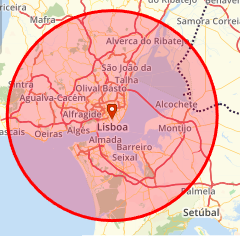
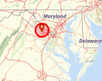
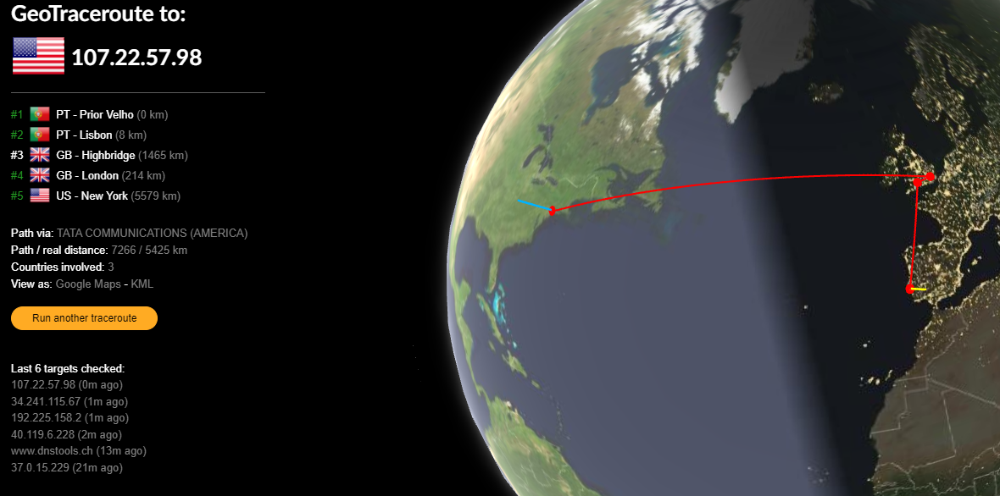
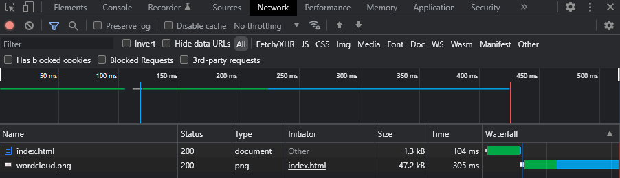

Foram observadas as localizações atuais da criação desta página, assim como do servidor que permite mostrá-la na web, respetivamente.
 
Fez-se um traceroute com ajuda da ferramente GeoTraceroute, de forma
a ficar mais visualmente apelativo que um bloco de texto.
Como se pode ver, a página vem dos Estados Unidos e passa pelo Reino Unido
antes de chegar a Portugal.

A última observação foi a de carregamento de dados por parte da página.
Como é possível observar, a página demorou 104ms a ser carregada pelo browser,
mas a imagem demorou 305ms.

Foram observados também os tempos de carregamento da página principal da Lusófona e, como era de esperar, foram muito maiores.